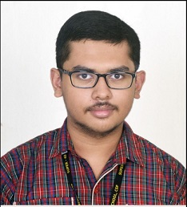

Divyajyoti Panda

Los Angeles, CA, 90007 | (213) 886-3879 | divyajyo@usc.edu | linkedin.com/in/divyajyotipanda
Education
University of Southern California (USC), Los Angeles, CA (Aug 2023 - May 2025)
Master of Science
Major: Computer Science
Relevant Coursework: Analysis of Algorithms, Database Systems, Machine Learning, Natural Language Processing
National Institute of Technology, Rourkela (NITR), Odisha, India (Aug 2019 - May 2023)
Bachelor of Technology
Major: Computer Science & Engineering
Minor: Electronics & Communication Engineering
Relevant Coursework: Object-Oriented System Design, Software Engineering, Machine Learning, Artificial Intelligence
Skills
Programming Languages: Python, Java, C/C++, MATLAB, Unix shell scripting
Database: SQL, PL/SQL, PostgreSQL, NoSQL
DevOps: Docker, Kubernetes
Machine Learning Frameworks: Numpy, Pandas, Scikit-learn, Tensorflow, Keras, PyTorch, Transformers, Adapters, Fairseq
Work Experience
Member of Technical Staff-I, Oracle, Bengaluru, India (Jun 2023 - Jul 2023)
- Created rotating logger to store logs generated by saw server in sequence of files with Java
- Performed black box testing to identify cases of formula injection in Oracle Analytics Cloud
Member of Technical Staff-I Summer Intern, Oracle, Bengaluru, India (May 2022 - Jul 2022)
- Developed load balancing algorithm proof of concept for distribution of service requests across saw server nodes, subject to certain soft and hard constraints, and implemented on Python in multiprocessing and multithreading fashion
Publications
- Multilingual Neural Machine Translation System for Indic to Indic Languages
- Statistical Machine Translation for Indic Languages
- Rapid Detection of Fragile X Syndrome: A Gateway Towards Modern Algorithmic Approach
- Extreme Learning Machines with feature selection using GA for effective prediction of fetal heart disease: A Novel Approach
Projects
Domain Expansion: Parameter-Efficient Modules as Building Blocks for Composite Generative Tasks
- Created synthetic data on responses to identify MBTI personality traits in individuals using self-engineered prompts on LLMs
- Trained text generation and zero-shot classification PEM adapters on individual traits, and merging them via composing PEMs modules to create MBTI personalities
- Evaluated via human evaluation, MBTI personality tests, and LLM-as-a-Judge
Bad Writing is "Fine": Tuning an LLM to Suggest Improvements
- Extracted text from PDFs of 86 essays from U-M Developing Writers Writing Samples dataset and preprocessed to remove noisy data and paragraphing using self-made langchain prompts
- Identified 6 different issues of writing, such as lack of flow and vagueness, and created langchain prompts to inject them in all essays and evaluate essays out of 5, with justification, on them separately for tuning LLMs to suggest improvements
Extra-Curricular Activities
- Delivered a talk in “Applied Python-II” workshop conducted by School of Computer Applications, KIIT University, Bhubaneswar, India in Dec 2023
- Mentored students as part of Create Classes conducted by Cyborg, robotics club of NITR in 2021, 2022, and 2023, and taught concepts of basic electronics, C/C++, Python and Arduino programming, machine learning and deep learning